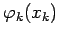
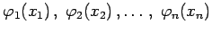

Inhalt Index DeskTop Bronstein

 Differentialgleichungen Partielle Differentialgleichungen Lineare partielle Differentialgleichungen 2. Ordnung Integrationsmethoden für lineare partielle Differentialgleichungen 2. Ordnung
Differentialgleichungen Partielle Differentialgleichungen Lineare partielle Differentialgleichungen 2. Ordnung Integrationsmethoden für lineare partielle Differentialgleichungen 2. Ordnung


Durch spezielle Substitutionen kann für viele Differentialgleichungen der Physik zwar nicht immer die Gesamtheit, jedoch eine Schar von Lösungen bestimmt werden, die von frei wählbaren Parametern abhängt. Lineare Differentialgleichungen, besonders 2. Ordnung, können oft mit Hilfe einer Substitution in der Form eines Produktansatzes
gelöst werden. Da das Ziel darin besteht, die Funktionen  getrennt, d.h. jede für sich aus einer gewöhnlichen Differentialgleichung zu bestimmen, in der nur noch die eine Variable xk enthalten ist, spricht man für (9.89) auch vom Separationsansatz. In vielen Fällen gelingt diese Variablentrennung, nachdem der Lösungsansatz (9.89) in die gegebene Differentialgleichung eingesetzt wurde. Wenn hierbei die Lösung der gegebenen Differentialgleichung gewissen homogenen Randbedingungen genügen soll, dann kann es ausreichend sein, daß nur ein Teil der Funktionen  des Separationsansatzes bestimmte Randbedingungen zu erfüllen braucht.
Aus den so bestimmten Lösungen ergeben sich durch Summationen, Differentiationen und Integrationen neue Lösungen. Die Parameter sind dabei so zu wählen, daß auch die restlichen Anfangs- und Randbedingungen erfüllt werden (s. die folgenden Beispiele). Schließlich muß beachtet werden, daß die mit dieser Methode ermittelte Lösung, sei es in der Gestalt einer Reihe oder eines uneigentlichen Integrals, eine ,,formale Lösung`` ist. Das bedeutet, daß noch zu prüfen ist, ob die Lösung einen physikalischen Sinn ergibt, d.h. z.B., ob sie konvergiert, ob sie die ursprüngliche Differentialgleichung und die Randbedingungen erfüllt, d.h. z.B., ob sie gliedweise differenzierbar ist und ob ein Grenzübergang bei Annäherung an den Rand existiert.
In den Beispielen dieses Abschnitts sind die Reihen und die uneigentlichen Integrale konvergent, wenn die Funktionen, die die Anfangsbedingungen definieren, entsprechenden Einschränkungen unterworfen werden (s. z.B. die Forderung nach Stetigkeitder 2. Ableitung in den Abschnitten Saitenschwingungsgleichung und Stabschwingungsgleichung).